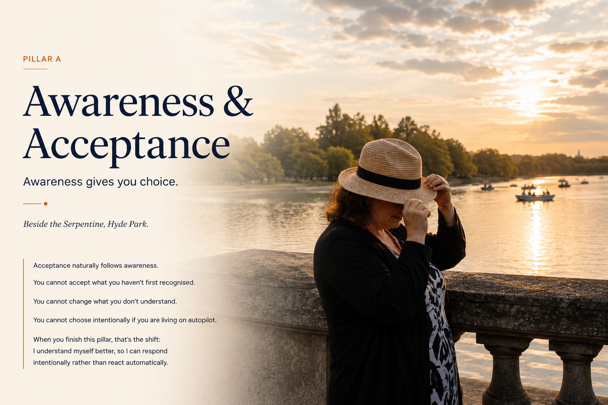

Awareness & Acceptance
Pillar A. Awareness gives you choice. Beside the Serpentine, Hyde Park.
Acceptance naturally follows awareness.
You cannot accept what you haven’t first recognised.
You cannot change what you don’t understand.
You cannot choose intentionally if you are living on autopilot.
When you finish this pillar, that’s the shift: I understand myself better, so I can respond intentionally rather than react automatically.
A Core Teaching Concept
The Captain of Your Ship
You can’t control the sea or the weather, but you can learn to navigate through it.
Every wave eventually passes.
You Are the Captain
You decide where you’re going.
Not the weather. Not the waves. Not the opinions of others.
The Sea
Life is the sea. Sometimes calm. Sometimes unpredictable. Sometimes beautiful. Sometimes frightening.
We can’t control the sea. We learn to sail it.
Tools & Practices
Explore the Ship
Waves
Your emotions. Some are small ripples. Some are big storms.
Instead of fighting every wave: notice it, ride it, let it pass.
Every wave eventually passes.
Weather
Life’s circumstances: illness, redundancy, divorce, bereavement, unexpected joy, success.
You can’t control the weather, but you can prepare for it.
Anchor
What keeps you steady: your values, your relationships, your purpose, your beliefs, your daily habits.
It doesn’t stop the storm, but it stops you drifting.
Compass
Your purpose.
It reminds you where you want to go, even when you can’t see the shoreline.
Sails
Your mindset and skills. You can’t control the wind, but you can adjust your sails.
The same wind that pushes one ship off course can help another move forward.
Backpack
We all carry heavy things: worry, guilt, anger, regret, resentment, limiting beliefs.
One by one, when you’re ready, you choose what to let go of.
You take each stone and release it into the sea. The ripples fade. The ocean keeps moving. You don’t have to carry it anymore.
Horizon
Hope. You may not know exactly what’s beyond it, but you keep sailing.
One decision. One adjustment. One day at a time.
Along the Way
Keep Your Ship Seaworthy
These keep you strong for the journey.
Sleep
Restores your energy.
Movement
Keeps you moving forward.
Nourishment
Fuels your body and brain.
Connection
Reminds you you’re not alone.
Laughter
Lightens the heaviest days.
A few questions to sit with
- What am I feeling?
- What do I need?
- What do I value?
- What beliefs are steering me?
- What is weighing me down?
- What can I choose next?
One Tiny Choice
You’ve Got This, Captain
You can’t stop every storm, but you can become a stronger captain.
Keep learning, keep adjusting, keep believing.
Every wave eventually passes.
So today: notice one wave, loosen your grip on one stone you’ve been carrying, or adjust one sail. One tiny choice is all it takes to start.
You are stronger than you know, and more resilient than you realise.
Want to go deeper into Awareness & Acceptance?
Explore Awareness & Acceptance in the Visual Learning Library →
Continue exploring The L.A.U.G.H.T.E.R. Method®